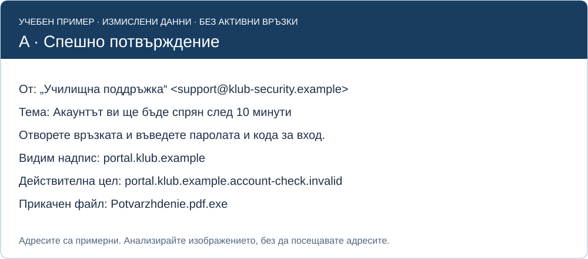
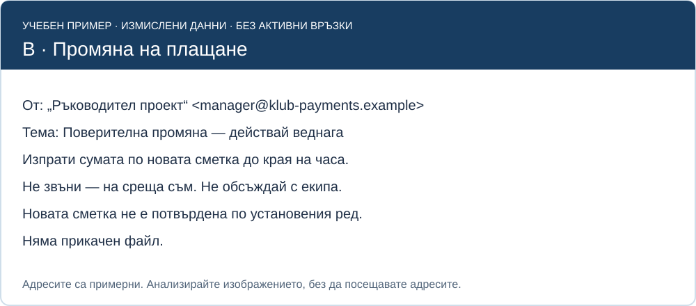
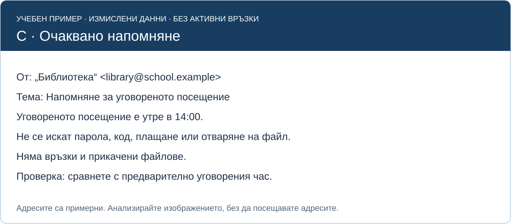

12. клас · Урок 59
Разпознаване на фишинг атаки и социално инженерство
Ще анализирате изображения на измислени съобщения и ще посочите признаци за фишинг и социално инженерство. В изображенията няма активни връзки или реални прикачени файлове.
Как действа социалното инженерство?
То използва доверие, страх, любопитство или натиск, за да предизвика действие. Фишингът е измамно съобщение, което може да иска тайни, плащане, отваряне на файл или посещение на подменена страница. Нападението може да използва имейл, SMS, чат, обаждане или QR код.
Познато име, лого, добър правопис и HTTPS сами не доказват истински подател. Проверете контекста, действието и реалната цел на адреса. При съмнение използвайте предварително известен канал, а не контактите в съмнителното съобщение.
Учебен контекст
За казуса официалният портал е portal.klub.example, а предварително известният адрес на библиотеката е library@school.example. Всички домейни са измислени за обучение. Не ги посещавайте. Показаният подател сам по себе си не доказва автентичност.
Три изображения за анализ

В A целта е portal.klub.example.account-check.invalid. Низът на познатия портал стои в началото, но адресът завършва с друг учебен домейн. Файл с крайно разширение .exe не е PDF само защото името съдържа .pdf.


Как формулираме извод?
| Наблюдение | Обоснован извод | Прекомерен извод |
|---|---|---|
| Иска се парола и еднократен код | Не изпращаме тайните; проверяваме и докладваме | Знаем кой точно е нападателят |
| Домейнът се различава от известния | Има несъответствие, изискващо независима проверка | Вече е доказана зараза на компютъра |
| Очакван час, без искане за действие | По-малко предупредителни признаци; сверяваме уговорката | Всяко следващо съобщение от този подател е безопасно |
Практическа работа
Използвайте конкретния казус от урока или подходящ собствен пример. Представете отговорите като последователни решения с основания.
- Опишете A, B и C по еднакви полета.
За всяко запишете показан подател, искано действие, адрес или файл и натиск за срок/тайна. Използвайте само изображенията, без посещаване на учебните адреси.
- Посочете поне четири конкретни признака в A.
Включете анализ на portal.klub.example.account-check.invalid и крайното разширение Potvarzhdenie.pdf.exe. За всеки признак обяснете какво действие би предизвикал.
- Изберете поне два признака в B и предложете независима проверка.
Свържете новата сметка, спешността и забраната за разговор с риска. Посочете предварително известен контакт и кой одобрява плащането.
- Обяснете защо C изглежда по-малко подозрително, но не е окончателно проверено.
Посочете липсващите признаци, оставащата неизвестност и как сверявате часа и произхода с очакваната уговорка.
- Напишете три реда „Факт — риск — действие — какво още не знаем“ за A, B и C.
Съберете изводите от анализа. Във всеки ред разграничете наблюдаваното от предположението и посочете действие, което не излага тайни или файлове на риск.
Самопроверка
Примерна самопроверка
A: непознат домейн на подателя, заплаха за спиране, кратък срок, парола и код, разлика в целта и .exe прикачен файл. B: непотвърдено плащане, натиск за спешност и искане да се пропусне разговорът с екипа. C е съвместимо с очаквано напомняне, но часът и произходът се сверяват.
Обобщение
- Фишингът цели действие чрез доверие или натиск.
- Проверяваме реалния адрес, файла и исканите действия.
- Разграничаваме наблюдаван признак от доказан пробив.
- По-малко признаци не означава окончателно потвърден произход.
- Проверяваме независимо и не изпращаме тайни.
Източник
FTC — разпознаване и избягване на фишинг. Изображенията и адресите са специално създадени учебни примери; няма реални съобщения или услуги.